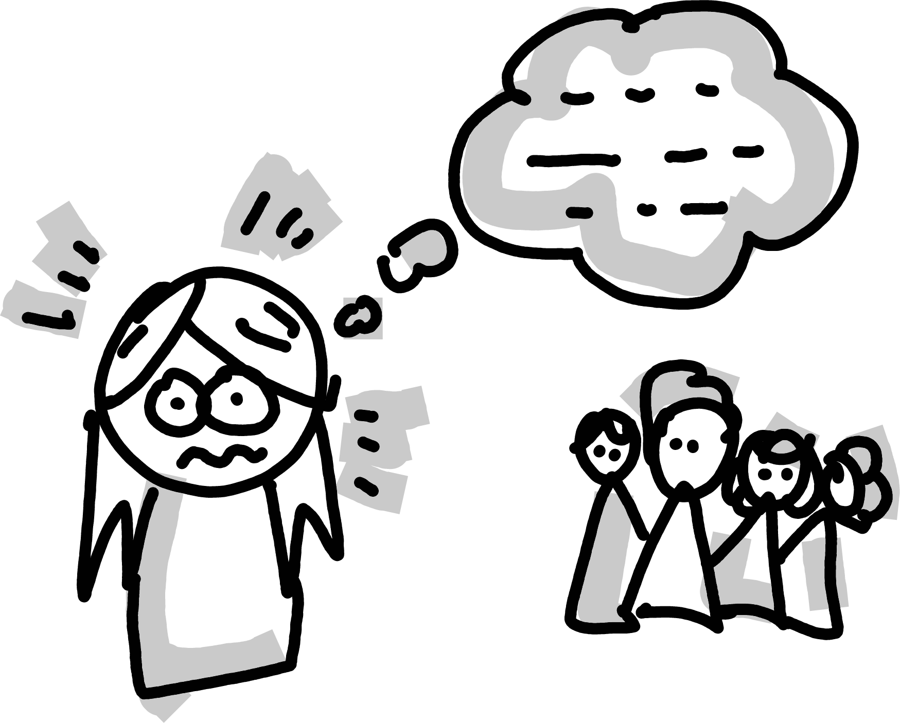

5 Structured group work with assigned asymmetrical roles and switching - Lessons from Pair Programming across disciplines
5.2 What is “pair programming”? (and why should you care?)
In the software industry, people often work in pairs, which evolved over the years into a standard collaborative practice called “pair programming” (Williams 2010). Partners take turns playing two different roles: driver and navigator. The driver has exclusive control of the shared computer, and the navigator guides the driver by acting as their sounding board. Being in each role allows them to gain and contribute unique perspectives on the task at hand. Switching roles frequently allows both partners to get the most out of the experience.

The purpose of the exercise is not only to produce better output (e.g., code) but also to: share knowledge and practice (cross-pollinate ideas); help each other to grow; create friendships and community; and foster a culture of being able to doubt and ask for help (you’re never struggling alone).
In the professional world, pair programming benefits the product, the individuals, and the team. When implemented in the classroom, students can reap those same benefits, with evidence of positive impact on learning experience and outcomes (Hanks et al. 2011).
We are a team of UoE educators who have been using pair programming as a group work protocol in our teaching for several years. We have done so across many subject areas (psychology, mathematics, statistics, data science, medicine, epidemiology, business, EFI); levels of study (UG and PGT); and delivery modalities (in person, online, hybrid). We have consistently seen the positive impact of this practice on our students and teaching teams.
In our view, the benefits come from the structured roles and the process, which are transferable to other production tasks beyond just writing code (Saltz and Heckman 2020). Indeed, any task where a group of people create an artifact (e.g., writing, weaving, drawing, problem-solving) could apply the same collaboration principles.
5.3 Structured roles for active learning
Group work can be beneficial to learning, but navigating group dynamics requires effort, which can significantly worsen the cognitive load of learning something new. When roles are vague (or non-existent), communicating and negotiating responsibilities between group members can become an extra task in itself. For instance, when no-one in a team feels individually responsible, everyone might wait for the others to take initiative, and nothing gets done; or, one student might assume a leadership role, leaving others who are less confident to follow passively or to disengage entirely.
As a structured way to work together (a “collaboration script” (Weinberger 2011)), pair programming gives groups a roadmap with prescribed roles for each student, and specific activities associated with each role. With the burden of inefficient group work lifted, students have more room to focus on learning. Furthermore, when clear roles are assigned, everyone has to take ownership of their part and actively contribute.
“Making sure everyone takes turns being the driver means everyone needs to contribute.” - UG, Psychology

As a result, we see students engage more. They take responsibility for their group, attend more sessions, and come better prepared to not let their teammates down.
“Students were not engaging in the tutorial sessions at the beginning, which made them less useful. But it improved after having pair programming” - PGT, Medical School
Having defined roles doesn’t leave room for any one student to take over the task or speak over others, as can sometimes happen in unstructured group work. This is particularly important as many of our students have experienced marginalisation, and hence feel less safe putting themselves forward.
“This is sort of just a problem with sexism, but I have really disliked group working in the past because I’ve been put with people (boys) who completely disrespect my work. This is why I’m opposed to the forced group working. It’s better to work alone than be treated like that.” - UG, Mathematics
Although the structured roles are not a magic bullet to prevent these issues, they can provide tools for both students and tutors to maintain a safer learning environment. One useful strategy is for tutors to casually check in with the groups, leading with the question: “who is the driver?”. This does two things: first, it is a temperature check of whether the collaboration is working well; second, it reinforces the expectation that students should stick to the script at all times, even after the tutor leaves.

If a student is undermined by their partner, they can fall back on the script to reassert themselves as a valued contributor, or to communicate the issue with a tutor. This can reduce the emotional cost required to flag or confront bad behaviour directly, by giving both students and tutors a tool to defuse the situation.
5.4 Fostering peer learning and community
Pair programming provides plenty of opportunities for peer learning. The driver has to verbalise their specific ideas and problems, discuss them with the navigator, and synthesise the outcomes of their discussion to “put things on paper” and advance the task. The navigator must be an active listener, observer, and helper, and can take the leading role in higher-level strategic thinking. Both students are exposed to each other’s approach, and learn from each other by cross-pollination.
“The most useful part of [pair programming] is being able to collaborate with other classmates, which allows me to discover aspects I hadn’t noticed in my own work through the questions raised by others.” - PGT, Mathematics
[A core learning outcome from the course was] Experience in pair programming and trying to explain concepts to another student. Sometimes it’s quite easy to “see” how you’d do something yourself, but actually explaining this instead of doing it is more difficult, so the online sessions were very useful to practice this . I also found it very valuable to see how others work and how they understand code differently.” - PGT, Medical School
Students also appreciate how discussing with a peer can generate new ideas. A pair programming environment is highly conducive to discussion, creating a free flow of ideas where the outcome is more than the sum of its parts. Since only one person can write things down, students must verbally negotiate a shared understanding of the agreed way forward.
“We have different ideas, and co-operate with each other could generate more ideas.” - UG, Psychology
“Group discussions often have unexpected results.” - UG, Psychology

Although the roles are asymmetrical at any particular point in time, taking turns ensures that all students benefit equitably from playing both roles over the course of a session or a semester.
“The practice of being a driver and a navigator is very useful. These two different roles provide me with distinct perspectives on the code. When I’m the driver, I focus on how to complete the code, and when I’m the navigator, I gain insights into how my fellow students understand the code, which helps me learn new things.” - PGT, Mathematics
Beyond direct benefits in the classroom, we have also seen pair programming help build a sense of community among students and enrich their personal life at university. Students build a network of peers that they can turn to for support later. This is especially critical in distance learning, where students do not have the opportunity to naturally meet peers (e.g., outside of class).
“The group work is very helpful. Not only have I made new friends, but I now also have people that I can rely on when I need help. Group work has also made the individual workload seem much lighter and we get things done faster.” - UG, Psychology
“[It] was nice to get some 1-1 interaction through the pair programming in what could have been an otherwise solitary course.” - PGT, Mathematics (delivered online in 2020/21)
There are many ways to assign students into pairs, which might influence the classroom experience and community building in different ways. For example, many students are more likely to attend class if they can work with the same friend each time, but this might mean that they miss out on meeting new people. Swapping partners each week will create a network of student-to-student connections which contributes to cohort building. Finally, stretching the definition of “pair” programming to groups of 3 or more (with a single driver) can also work well. Allowing for more navigators can create flexibility in terms of logistics (odd number of students), technological problems (connection issues in online teaching), student preferences, or accessibility.
“It gives you the perfect opportunity to work with other people and make potential new friends.” - UG, Psychology
“[about using PP on 4 different courses] Thank you for the interactive pair programming sessions [across the academic year], they made a big difference in creating a community of online learners.” - PGT, Medical School
5.5 Tackling issues as a community of practice
Many of our students have experience of dysfunctional group work, where different group members have different priorities, expectations, or skills. Pair programming can exacerbate this issue, because each student is expected to contribute actively to the joint work, whether they are driver or navigator. Inevitably, pairs will occasionally be incompatible, in a way which can undermine the effectiveness of peer learning. For instance, a very wide gap in technical proficiency or level of preparation can make for a frustrating experience for both students, leading to disengagement and even resentment.
“I fully agree with the idea of group working, but in practise it usually results in people being left behind by those who understand better […] and unfortunately in maths way too many people are mean and make the beginners feel really bad.” - UG, Mathematics
Although the strategies discussed above can minimise this, there is no single correct solution. Whatever way you decide to implement groupwork, you will encounter issues, and your approach will need to be adapted to your discipline, classroom, or even cohort.
We have come together as a community of practice for mutual support. We have found it incredibly valuable as educators to discuss experiences, tackle challenges, and share examples of good practice.
5.6 This blog post was pair-programmed
Pair programming has worked in our programming classes, but we very much see the value of this kind of structured group work outwith a programming context. For instance, we “pair-programmed” the writing and editing of this very blog post over two sunny afternoons. We took turns being the driver typing on a laptop, while everyone else navigated, contributing their ideas and wording. We believe that the principles we have discussed are widely applicable across disciplines, and we look forward to finding out how colleagues adapt it in their classrooms.